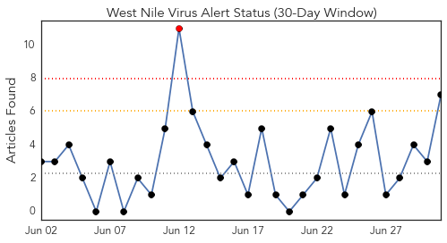
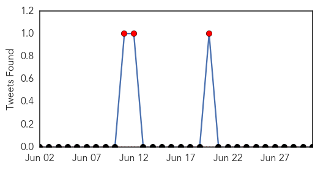
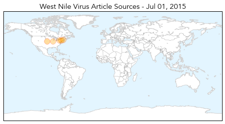
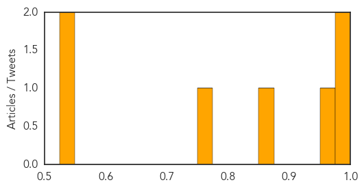

Measles
30-Day Web Trend
0 alerts, 0 warnings

30-Day Twitter Trend
1 alerts, 0 warnings

Article Locations

Article Confidences

Top Articles:
- 0.909
- Measles at Disneyland led to a public health victory.
- 0.900
- The Scientist Magazine®
- 0.633
- California Cracks Down on Vaccine Exemptions
- 0.599
- Jim Carrey calls California governor ‘corporate fascist’ over vaccine law
- 0.587
- California Governor Signs Tough New Vaccination Law
- 0.571
- California governor toughens vaccinations rules
- 0.561
- California governor signs tough new vaccination law
- 0.560
- California governor toughens vaccinations rules
- 0.549
- California governor signs strict law requiring vaccinations for most kids
Top Tweets:
-
No tweets found for Jul 01, 2015
West Nile Virus
30-Day Web Trend
1 alerts, 0 warnings

30-Day Twitter Trend
3 alerts, 0 warnings

Article Locations
Article Confidences
Top Articles:
- 0.997
- Arboviral Disease in New Hampshire
- 0.996
- Village of Lemont Spraying for Mosquitos Thursday
- 0.964
- NYC detects West Nile virus in Queens and Staten Island mosquitoes
- 0.853
- First West Nile Mosquitoes Found This Year in New Dorp Beach and Queens
- 0.752
- News, Weather and Sports for Lincoln, NE; KLKNTV.com
- 0.539
- West Nile Mosquitoes Found in New York and Texas
- 0.534
- West Nile Virus Confirmed in Webster County, Officials Say Likely Statewide
Top Tweets:
-
No tweets found for Jul 01, 2015